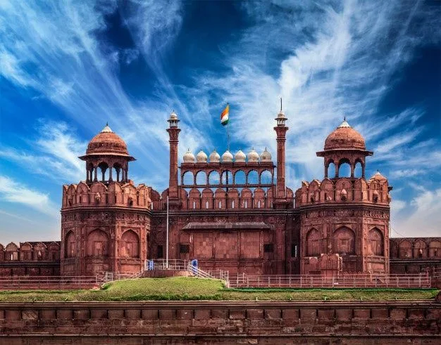
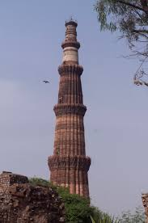
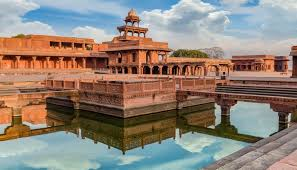
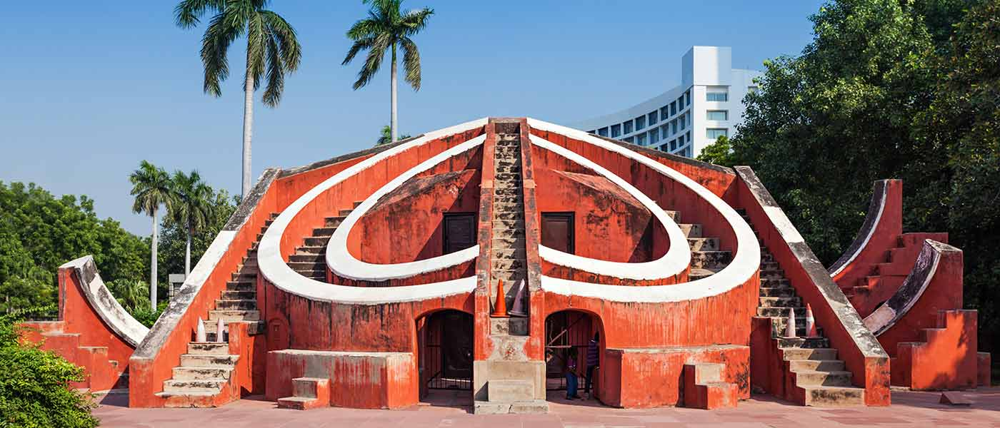
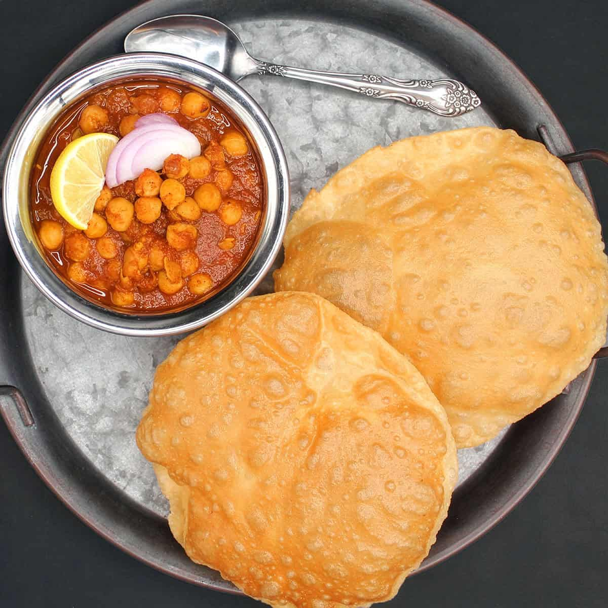
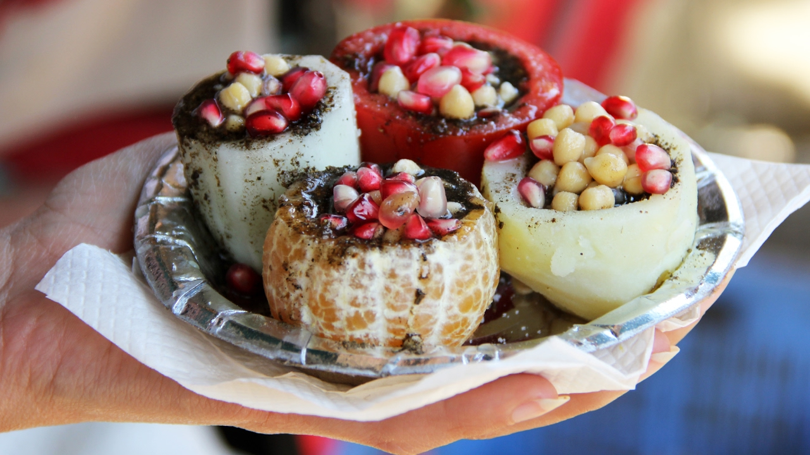
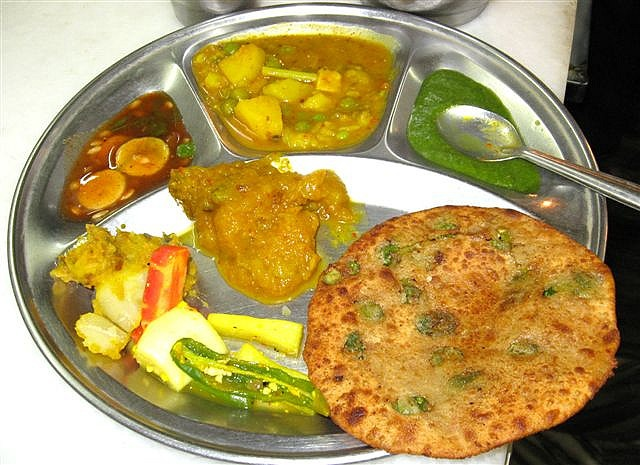
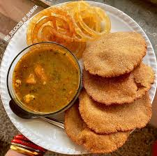
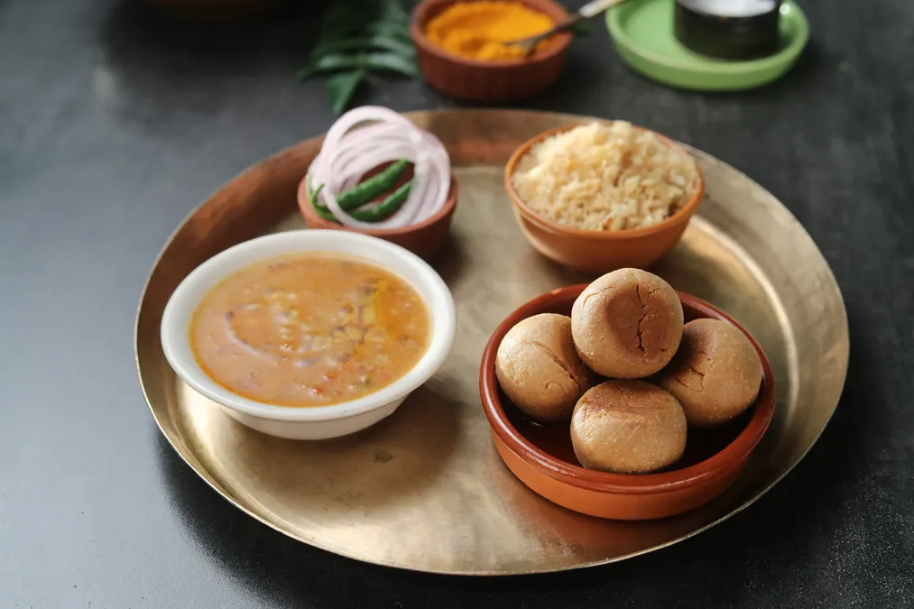

The Golden Triangle: Tourist Circuit
The Golden Triangle is more than just a travel circuit; it is a grand window into the soul of India. For many, this journey—stretching between the historic capital of Delhi, the romantic monuments of Agra, and the royal splendor of Jaipur—serves as the definitive introduction to the subcontinent. It is called "Golden" for the extraordinary wealth of cultural and historical treasures found in each city, which together form a nearly perfect equilateral triangle on the map of Northern India.
This 700-kilometer loop is a journey through time. In Delhi, you witness the collision of two worlds: the labyrinthine medieval lanes of the 17th-century Mughal capital and the wide, leafy boulevards of the British Raj. As you move south to Agra, the air changes. Here, the legendary Taj Mahal stands as an eternal monument to love, surrounded by red-sandstone forts that whisper secrets of the powerful Mughal Emperors. Finally, the triangle sweeps westward into the desert state of Rajasthan, arriving at the "Pink City" of Jaipur. It is a land of hilltop fortresses, vibrant bazaars, and palaces that seem to rise like mirages from the dust, reflecting the fierce pride and opulence of the Rajput warriors.
Traveling the Golden Triangle is a sensory symphony. It is the scent of blooming jasmine and pungent spices in a crowded bazaar; the sight of sunrise hitting white marble; the sound of temple bells and distant prayers; and the taste of rich, slow-cooked curries that have been perfected over centuries. Whether you are navigating the "organized chaos" of a rickshaw ride through Old Delhi or floating in a hot air balloon over the rugged Aravalli Hills, the Golden Triangle offers an experience that is as intense as it is beautiful.
For the modern traveler, this circuit is the perfect blend of accessibility and adventure. With world-class infrastructure and legendary hospitality, it offers a glimpse into India’s past, present, and future—all in one unforgettable loop.

🏛️ Delhi: The Multi-Layered Capital
Culture: A melting pot known as "Mini India." You’ll find people from every state here. The culture is defined by hospitality (Atithi Devo Bhava) and a deep love for food. The "Dilliwala" culture is a mix of rugged Punjabi energy and refined Mughal etiquette (Tehzeeb).
Environment: A stark contrast between the Walled City (Old Delhi)—a labyrinth of narrow, sun-dappled lanes and spice-scented air—and Lutyens' Delhi, which features wide, tree-lined boulevards and grand colonial mansions.
History: From the legendary city of Indraprastha in the Mahabharata to the seat of the British Raj, Delhi has always been the ultimate prize for conquerors.
📸 Location from Delhi

Red Fort, Delhi

Qutub Minar, Delhi
🤍 Agra: The Monumental Masterpiece
Culture: Heavily influenced by the Braj region (the birthplace of Lord Krishna). The local culture is famous for its craftsmanship—specifically Pietra Dura (marble inlay work), where semi-precious stones are carved into white marble, the same technique used on the Taj Mahal.
Environment: The city feels like a giant open-air museum. The "Taj Trapezium Zone" is a protected eco-area around the monument to prevent pollution, giving the immediate vicinity a cleaner, greener feel than the bustling city center.
History: Agra reached its peak in the 16th and 17th centuries when it was the capital of the Mughal Empire. It was the playground of Emperors Akbar, Jahangir, and Shah Jahan.
📸 Location from Agra

Taj Mahal, Agra

Ghost Town, Agra
💖 Jaipur: The Royal Pink City
Culture: This is the heart of Rajputana pride. The culture is vibrant and colorful—think bright orange turbans, intricate Lehenga dresses, and folk music played on the Sarangi. Jaipur is a global hub for gemstones, blue pottery, and "Block Printing" textiles.
Environment: Known as the "Pink City" because the old walled center was painted terracotta pink in 1876 to welcome the Prince of Wales (pink symbolizes hospitality). The surrounding Aravalli Hills are dotted with massive forts that overlook the city.
History: Founded in 1727 by Maharaja Sawai Jai Singh II. Unlike other rulers who built in the hills for safety, Jai Singh moved to the plains to build a commercial capital, showing his forward-thinking nature as a scientist and astronomer.
📸 Location from Jaipur

Jantar Mantar, Jaipur
The Foods of the Golden Triangle
🍛 Delhi: The Melting Pot of Flavors
Delhi is the food capital of India. From the heavy Mughlai curries to the tangy street "chaat," there is something for every palate.
Chole Bhature: A quintessential Delhi breakfast. Spicy chickpeas (Chole) served with giant, fluffy, deep-fried bread (Bhature). Best found in the lanes of Civil Lines or Karol Bagh.
Old Delhi Chaat: A category of its own. Look for Aloo Tikki (spiced potato patties), Golgappas (crispy shells with tangy water), and Daulat ki Chaat—a light-as-air milk foam dessert available only in the winter months.
Paranthas at Gali Paranthe Wali: A famous narrow lane in Chandni Chowk where you can get fried flatbreads stuffed with everything from potatoes and paneer to green chilies and even lemon.
Butter Chicken: Invented in Delhi, this world-famous dish features tandoori chicken simmered in a silky, tomato-and-butter gravy.

Chole Bhature

Old Delhi Chaat

Paranthas at Gali Paranthe Wali

Butter Chicken
🍯 Agra: The City of Sweetness & Spice
Agra’s food culture is deeply influenced by the Mughal emperors, but it is most famous for its iconic "Petha."
Petha: A translucent, soft candy made from ash gourd (winter melon). You can find the classic dry version or modern flavors like Saffron, Chocolate, and Paan. Panchhi Petha is the most legendary brand to look for.
Bedai & Jalebi: The traditional Agra breakfast. Bedai is a spicy, lentil-stuffed fried bread served with a hot potato curry, followed immediately by sweet, crispy Jalebis to balance the spice.
Mughlai Paratha: Unlike the Delhi version, these are often richer, sometimes stuffed with minced meat (Keema) and egg, reflecting the royal kitchen traditions.
Dalmoth: A crunchy, spicy savory snack made of fried lentils, nuts, and spices—it's the perfect "edible souvenir" to take home.

Bedai & Jalebi

Mughlai Paratha
🌶️ Jaipur: The Royal Rajasthani Feast
Jaipur’s food is bold, spicy, and rich in ghee (clarified butter), designed originally for the warrior kings of the desert.
Dal Baati Churma: The signature dish of Rajasthan. It consists of Dal (lentils), Baati (hard wheat rolls baked over coal), and Churma (sweetened crushed wheat). It’s a heavy, soulful meal usually drenched in ghee.
Laal Maas: For meat-eaters, this is a must. A fiery red mutton curry cooked with a special variety of Rajasthani chilies. It is smoky, spicy, and incredibly tender.
Pyaaz Kachori: A popular street snack. A large, flaky, deep-fried pastry filled with a spicy onion stuffing. Rawat Mishthan Bhandar is the go-to spot in Jaipur for these.
Ghevar: A disc-shaped honeycomb sweet made during festivals. It’s soaked in sugar syrup and often topped with a thick layer of cream (Malai) and silver leaf.

Dal Baati Churma

Pyaaz Kachori